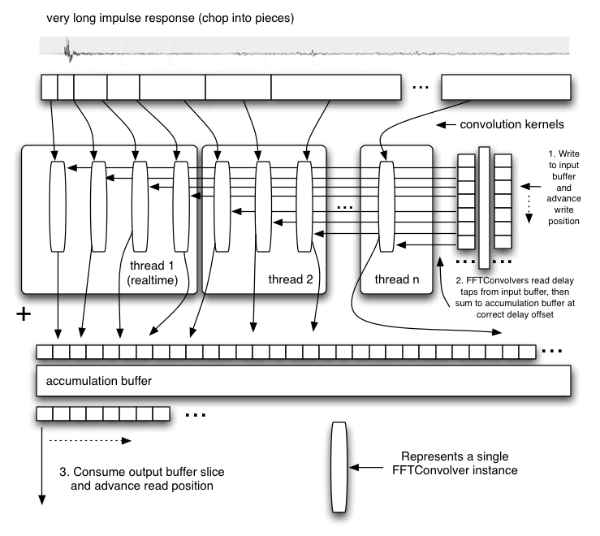

このセクションは、実装する際に役立つかも知れない参考情報です。
コンボリューション・リバーブは、高品質な音響空間のシミュレーションに使用する事ができます。 また非常に広範囲な特殊効果の作成に使用する事も可能です。この技術は、近年のプロフェッショナルなオーディオ/動画制作でも使われており、また、ゲーム・エンジンのルーム・エフェクトを作り出す素晴らしい選択でもあります。
良く最適化されたコンボリューション・エンジンを作る事はWeb Audio APIの実装の中でも非常に難易度の高い部分です。 入力される不定長の(あるいは理論上無限の長さの)オーディオストリームに対してコンボリューション演算を行う際には、ストリームを長さLの断片に分割し、それぞれの断片にコンボリューション演算を行い、その結果を遅延させながら足し合わせて出力信号を再構築する、「overlap-add」手法が使われます。

コンボリューション演算を直接的に行うと、よくある長いインパルスレスポンスを使用する場合に極めて高い計算能力が必要になるため、、FFT演算を用いる手法を使う必要があります。しかし、単純にOverlap-Addを使用して、FFTのサイズNをL=N/2とし、(0パディングした)コンボリューション・カーネルのサイズの少なくとも2倍に取り、上の図のような構成にすると、Lサンプル分の大きな入出力間の経路のレイテンシーが発生します。聴感上のディレイが大きくなるため、この単純な手法は使えません。 また大きなディレイは別にしても、FFTのサイズ N は極めて大きくなります。例えば44.1kHzで10秒間のインパルスレスポンスの場合Nは1048576(2^20)です。 このため実行に非常に長い時間が必要になり、更に、そのような長いFFTは位相エラーが大きくなるため実際的ではありません。
幾つかのトリックとして、インパルスレスポンスを(直線性の特性を利用して)小さなサイズに分割し、個別にコンボリューションを実行して結果を再合成する方法があります。最も良い方法の１つは異なるサイズのFFTとインパルスレスポンスの初期(先頭)部分に対する直接コンボリューション演算によってゼロ・レイテンシー出力を得る分割攻略手法です。 更に加えてリバーブが典型的には末尾部分に高周波成分のエネルギーをほとんど、あるいは全く含まない事を利用した最適化を行う事も可能です。この部分に関してはコンボリューションは非常に低いサンプルレートで演算する事も可能になります。
パフォーマンスは、最近のミッドレンジCPUで不安定になるようなストレスを与える事なくリアルタイム処理が容易にできるくらいに良くする事ができます。低(あるいはゼロ)レイテンシー処理を行うには、バッファリング/プロセシングをブロック毎に実行するため、マルチスレッド実装が必要になります。また高いパフォーマンスを得るには高度に最適化されたFFTアルゴリズムが必要になります。
コンボリューション・リバーブは、ステレオ信号の場合、通常左および右チャンネルの独立したインパルスレスポンスによる、2つのコンボリューション演算を行います。 5.1チャンネルサラウンドの場合ならば5チャンネルのそれぞれの出力を得るために少なくとも5つの独立したコンボリューション演算が必要になります。
例えばJPEGイメージ、WAV音声ファイル、MP4ビデオ、シェーダー、ジオメトリなどの他のリソースと同様に、インパルスレスポンスはマルチメディア・リソースの１つと考えられます。他のリソースと同じく、作成のためには作業が必要であり、高品質なものには価値があります。例えば、Audio Ease社ではかなり高価格($500～$1000)なAltiverbと呼ばれる製品を開発しており、コンボリューション・エンジンと共に幾つかの良く録音されたインパルスレスポンスを含んでいます。
FFTコンボルバーは、短時間のインパルスレスポンスに対して、少なくとも2倍の長さNのサイズのFFTを利用して短時間のコンボリューションを行う事ができます。この方法はN/2サンプルフレームのレイテンシーを招きます。このレイテンシーとパフォーマンス面を考慮すると長いコンボリューションには適しません。この構成のブロックのインスタンスを複数使用する事で極めて長いコンボリューションを実行する事が可能になります。
リバーブ・コンボルバーは単一のオーディオ・チャンネルに対して非常に長時間のリアルタイム・コンボリューション処理を行う事ができます。
これは、入力バッファと積算バッファに加えて複数のFFTコンボルバーオブジェクトを使用します。
特筆すべき点としては並列処理を活用するためマルチ・スレッド実装をする事も可能です。
また、レイテンシーを最小化するために、長いインパルスレスポンスの先頭部分をリアルタイム・スレッドで処理する事も可能です。理論上は先頭のFFTコンボルバーを(FFTを使わない)直接コンボリューション演算に置き換える事によりゼロ・レイテンシーの処理も可能です。

実際の音響空間でインパルスレスポンスを記録する最新で精密な手段は、長い指数的サインスイープを用いる方法です。テスト用のトーンは20～30秒あるいはもっと長くする事もできます。
スピーカーを通したテストトーンの再生は、部屋の様々な位置と方向にセットされたマイクで幾つか録音されます。 それぞれの録音について、スピーカーの配置と方向、マイクの種類、それらの設定、配置、方向を記録する事が重要です。
これらの録音に対し、テストトーンとの逆コンボリューション演算を行う事で、そのマイクの配置に対応した、部屋のインパルスレスポンスを作り出すという後処理が必要です。 これらのインパルスレスポンスをコンボリューションリバーブ・エンジンにロードすると、その部屋にいる時の音を再現する事ができます。
2つのコマンドラインツールが書かれました:
generate_testtonesは指数的サインスイープのテストトーンおよびその反転を生成します。 もう一つのツールconvolveは後処理用です。 これらのツールによって、録音機材があれば誰でも独自のインパルスレスポンスを記録する事が可能です。 ツールを実際にテストするために、幾つかの録音は面白い音の響きがある倉庫の空間で行われました。 これらは後で、コマンドラインツールによって後処理が行われました。
% generate_testtones -h
Usage: generate_testtone
[-o /Path/To/File/To/Create] Two files will be created: .tone and .inverse
[-rate <sample rate>] sample rate of the generated test tones
[-duration <duration>] The duration, in seconds, of the generated files
[-min_freq <min_freq>] The minimum frequency, in hertz, for the sine sweep
% convolve -h
Usage: convolve input_file impulse_response_file output_file